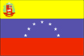

{kind=link}


![[Country map of Venezuela]](../maps/ve-map.jpg)
| Venezuela |  |
|
| | |
| Introduction |
Background: Venezuela was one of the three countries that emerged from the collapse of Gran Colombia in 1830 (the others being Colombia and Ecuador). For most of the first half of the 20th century, Venezuela was ruled by generally benevolent military strongmen, who promoted the oil industry and allowed for some social reforms. Democratically elected governments have held sway since 1959. Current concerns include: drug-related conflicts along the Colombian border, increasing internal drug consumption, overdependence on the petroleum industry with its price fluctuations, and irresponsible mining operations which are endangering the rain forest and indigenous peoples.
| Geography |
Location: Northern South America, bordering the Caribbean Sea and the North Atlantic Ocean, between Colombia and Guyana
Geographic coordinates: 8 00 N, 66 00 W
Map references: South America, Central America and the Caribbean
Area:
total:
912,050 sq km
land:
882,050 sq km
water:
30,000 sq km
Area - comparative: slightly more than twice the size of California
Land boundaries:
total:
4,993 km
border countries:
Brazil 2,200 km, Colombia 2,050 km, Guyana 743 km
Coastline: 2,800 km
Maritime claims:
contiguous zone:
15 nm
continental shelf:
200-m depth or to the depth of exploitation
exclusive economic zone:
200 nm
territorial sea:
12 nm
Climate: tropical; hot, humid; more moderate in highlands
Terrain: Andes Mountains and Maracaibo Lowlands in northwest; central plains (llanos); Guiana Highlands in southeast
Elevation extremes:
lowest point:
Caribbean Sea 0 m
highest point:
Pico Bolivar (La Columna) 5,007 m
Natural resources: petroleum, natural gas, iron ore, gold, bauxite, other minerals, hydropower, diamonds
Land use:
arable land:
4%
permanent crops:
1%
permanent pastures:
20%
forests and woodland:
34%
other:
41% (1993 est.)
Irrigated land: 1,900 sq km (1993 est.)
Natural hazards: subject to floods, rockslides, mud slides; periodic droughts
Environment - current issues: sewage pollution of Lago de Valencia; oil and urban pollution of Lago de Maracaibo; deforestation; soil degradation; urban and industrial pollution, especially along the Caribbean coast
Environment - international agreements:
party to:
Antarctic Treaty, Biodiversity, Climate Change, Desertification, Endangered Species, Hazardous Wastes, Marine Life Conservation, Nuclear Test Ban, Ozone Layer Protection, Ship Pollution, Tropical Timber 83, Tropical Timber 94, Wetlands, Whaling
signed, but not ratified:
Marine Dumping
Geography - note: on major sea and air routes linking North and South America
| People |
Population: 23,542,649 (July 2000 est.)
Age structure:
0-14 years:
33% (male 3,967,544; female 3,721,658)
15-64 years:
63% (male 7,406,086; female 7,355,923)
65 years and over:
4% (male 499,102; female 592,336) (2000 est.)
Population growth rate: 1.6% (2000 est.)
Birth rate: 21.09 births/1,000 population (2000 est.)
Death rate: 4.94 deaths/1,000 population (2000 est.)
Net migration rate: -0.19 migrant(s)/1,000 population (2000 est.)
Sex ratio:
at birth:
1.08 male(s)/female
under 15 years:
1.07 male(s)/female
15-64 years:
1.01 male(s)/female
65 years and over:
0.84 male(s)/female
total population:
1.02 male(s)/female (2000 est.)
Infant mortality rate: 26.17 deaths/1,000 live births (2000 est.)
Life expectancy at birth:
total population:
73.07 years
male:
70.05 years
female:
76.31 years (2000 est.)
Total fertility rate: 2.51 children born/woman (2000 est.)
Nationality:
noun:
Venezuelan(s)
adjective:
Venezuelan
Ethnic groups: Spanish, Italian, Portuguese, Arab, German, African, indigenous people
Religions: nominally Roman Catholic 96%, Protestant 2%
Languages: Spanish (official), numerous indigenous dialects
Literacy:
definition:
age 15 and over can read and write
total population:
91.1%
male:
91.8%
female:
90.3% (1995 est.)
| Government |
Country name:
conventional long form:
Bolivarian Republic of Venezuela
conventional short form:
Venezuela
local long form:
Republica Bolivariana de Venezuela
local short form:
Venezuela
Data code: VE
Government type: federal republic
Capital: Caracas
Administrative divisions:
23 states (estados, singular - estado),1 federal district* (distrito federal), and 1 federal dependency** (dependencia federal); Amazonas, Anzoategui, Apure, Aragua, Barinas, Bolivar, Carabobo, Cojedes, Delta Amacuro, Dependencias Federales**, Distrito Federal*, Falcon, Guarico, Lara, Merida, Miranda, Monagas, Nueva Esparta, Portuguesa, Sucre, Tachira, Trujillo, Vargas, Yaracuy, Zulia
note:
the federal dependency consists of 11 federally controlled island groups with a total of 72 individual islands
Independence: 5 July 1811 (from Spain)
National holiday: Independence Day, 5 July (1811)
Constitution: 30 December 1999
Legal system: based on organic laws as of July 1999; open, adversarial court system; has not accepted compulsory ICJ jurisdiction
Suffrage: 18 years of age; universal
Executive branch:
chief of state:
President Hugo CHAVEZ Frias (since 3 February 1999); note - the president is both the chief of state and head of government
head of government:
President Hugo CHAVEZ Frias (since 3 February 1999); note - the president is both the chief of state and head of government
cabinet:
Council of Ministers appointed by the president
elections:
president elected by popular vote for a six-year term; election last held 6 December 1998 (next to be held 28 May 2000 under new constitution)
election results:
Hugo CHAVEZ Frias elected president; percent of vote - 57%
note:
government coalition - Patriotic Pole or Polo Patriotico consists of MVR, MAS, and PPT
Legislative branch:
unicameral National Assembly or Asamblea Nacional; under the 1999 constitution, the bicameral Congress of the Republic has been replaced by a unicameral National Assembly; the total number of seats in the new National Assembly has not yet been determined, but members will be elected by popular vote to serve five-year terms; three seats will be reserved for the indigenous peoples of Venezuela
elections:
election for deputies to the new National Assembly are scheduled to be held in May 2000
election results:
NA; elections to be held in May 2000
Judicial branch: Supreme Tribunal of Justice or Tribuna Suprema de Justicia, magistrates are elected by the National Assembly for a single 12-year term
Political parties and leaders: Democratic Action or AD [leader NA]; Fifth Republic Movement or MVR [leader NA]; Homeland for All or PPT [leader NA]; Movement Toward Socialism or MAS [leader NA]; National Convergence or Convergencia [leader NA]; Radical Cause or La Causa R [leader NA]; Social Christian Party or COPEI [leader NA]
Political pressure groups and leaders: FEDECAMARAS, a conservative business group; VECINOS groups; Venezuelan Confederation of Workers or CTV (labor organization dominated by the Democratic Action)
International organization participation: CAN, Caricom (observer), CCC, CDB, ECLAC, FAO, G- 3, G-11, G-15, G-19, G-24, G-77, IADB, IAEA, IBRD, ICAO, ICC, ICFTU, ICRM, IFAD, IFC, IFRCS, IHO, ILO, IMF, IMO, Intelsat, Interpol, IOC, IOM, ISO, ITU, LAES, LAIA, MINURSO, NAM, OAS, OPANAL, OPCW, OPEC, PCA, RG, UN, UNCTAD, UNESCO, UNHCR, UNIDO, UNIKOM, UNU, UPU, WCL, WFTU, WHO, WIPO, WMO, WToO, WTrO
Diplomatic representation in the US:
chief of mission:
Ambassador Alfredo TORO Hardy
chancery:
1099 30th Street NW, Washington, DC 20007
telephone:
[1] (202) 342-2214
FAX:
[1] (202) 342-6820
consulate(s) general:
Boston, Chicago, Houston, Miami, New Orleans, New York, San Francisco, and San Juan (Puerto Rico)
Diplomatic representation from the US:
chief of mission:
Ambassador John Francis MAISTO
embassy:
Calle F con Calle Suapure, Colinas de Valle Arriba, Caracas 1060
mailing address:
P. O. Box 62291, Caracas 1060-A; APO AA 34037
telephone:
[58] (2) 975-6411
FAX:
[58] (2) 975-6710
Flag description: three equal horizontal bands of yellow (top), blue, and red with the coat of arms on the hoist side of the yellow band and an arc of seven white five-pointed stars centered in the blue band
| Economy |
Economy - overview: Venezuelan officials estimate the economy contracted 7.2% in 1999. A steep downturn in international oil prices during the first half of the year fueled the recession, and spurred the CHAVEZ administration to abide by OPEC-led production cuts in an effort to raise world oil prices. The petroleum sector dominates the economy, accounting for roughly a third of GDP, around 80% of export earnings, and more than half of government operating revenues. Higher oil prices during the second half 1999 took pressure off the budget and currency; the bolivar is widely believed to be overvalued by as much as 50%. Despite higher oil prices, the economy remains in the doldrums, possibly due to investor uncertainty over President CHAVEZ's reform agenda. Implementing legislation for the new constitution will not be passed until the second half of 2000, after a new legislature is elected. With the president's economic cabinet attempting to reconcile a wide range of views, the country's economic reform program has largely stalled. The government is seeking international assistance to finance reconstruction after massive flooding and landslides in December 1999 caused an estimated $15 billion to $20 billion in damage.
GDP: purchasing power parity - $182.8 billion (1999 est.)
GDP - real growth rate: -7.2% (1999 est.)
GDP - per capita: purchasing power parity - $8,000 (1999 est.)
GDP - composition by sector:
agriculture:
4%
industry:
63%
services:
33% (1997 est.)
Population below poverty line: 67% (1997 est.)
Household income or consumption by percentage share:
lowest 10%:
1.5%
highest 10%:
35.6% (1995)
Inflation rate (consumer prices): 20% (1999)
Labor force: 9.9 million (1999)
Labor force - by occupation: services 64%, industry 23%, agriculture 13% (1997 est.)
Unemployment rate: 18% (1999 est.)
Budget:
revenues:
$26.4 billion
expenditures:
$27 billion, including capital expenditures of $NA (2000 est.)
Industries: petroleum, iron ore mining, construction materials, food processing, textiles, steel, aluminum, motor vehicle assembly
Industrial production growth rate: 0.5% (1995 est.)
Electricity - production: 70.39 billion kWh (1998)
Electricity - production by source:
fossil fuel:
25.46%
hydro:
74.54%
nuclear:
0%
other:
0% (1998)
Electricity - consumption: 65.463 billion kWh (1998)
Electricity - exports: 0 kWh (1998)
Electricity - imports: 0 kWh (1998)
Agriculture - products: corn, sorghum, sugarcane, rice, bananas, vegetables, coffee; beef, pork, milk, eggs; fish
Exports: $20.9 billion (f.o.b., 1999)
Exports - commodities: petroleum, bauxite and aluminum, steel, chemicals, agricultural products, basic manufactures (1998)
Exports - partners: US and Puerto Rico 57%, Colombia, Brazil, Japan, Germany, Netherlands, Italy (1999)
Imports: $11.8 billion (f.o.b., 1999)
Imports - commodities: raw materials, machinery and equipment, transport equipment, construction materials (1999)
Imports - partners: US 53%, Japan, Colombia, Italy, Germany, France, Brazil, Canada (1999)
Debt - external: $32 billion (1999)
Economic aid - recipient: $35 million with more assistance likely as a result of flooding (1999)
Currency: 1 bolivar (Bs) = 100 centimos
Exchange rates: bolivares (Bs) per US$1 - 652.333 (January 2000), 605.717 (1999), 547.556 (1998), 488.635 (1997), 417.333 (1996), 176.843 (1995)
Fiscal year: calendar year
| Communications |
Telephones - main lines in use: 2.6 million (1998)
Telephones - mobile cellular: 2 million (1998)
Telephone system:
modern and expanding
domestic:
domestic satellite system with 3 earth stations; recent substantial improvement in telephone service in rural areas; substantial increase in digitalization of exchanges and trunk lines; installation of a national inter-urban fiber-optic network capable of digital multimedia services
international:
3 submarine coaxial cables; satellite earth stations - 1 Intelsat (Atlantic Ocean) and 1 PanAmSat; participating with Colombia, Ecuador, Peru, and Bolivia in the construction of an international fiber-optic network
Radio broadcast stations: AM 201, FM NA (20 in Caracas), shortwave 11 (1998)
Radios: 10.75 million (1997)
Television broadcast stations: 66 (plus 45 repeaters) (1997)
Televisions: 4.1 million (1997)
Internet Service Providers (ISPs): 11 (1999)
| Transportation |
Railways:
total:
584 km (248 km privately owned)
standard gauge:
584 km 1.435-m gauge
Highways:
total:
96,155 km
paved:
32,308 km
unpaved:
63,847 km (1997 est.)
Waterways: 7,100 km; Rio Orinoco and Lago de Maracaibo accept oceangoing vessels
Pipelines: crude oil 6,370 km; petroleum products 480 km; natural gas 4,010 km
Ports and harbors: Amuay, Bajo Grande, El Tablazo, La Guaira, La Salina, Maracaibo, Matanzas, Palua, Puerto Cabello, Puerto la Cruz, Puerto Ordaz, Puerto Sucre, Punta Cardon
Merchant marine:
total:
34 ships (1,000 GRT or over) totaling 488,584 GRT/888,764 DWT
ships by type:
bulk 5, cargo 10, combination bulk 1, liquified gas 2, passenger/cargo 1, petroleum tanker 7, roll-on/roll-off 7, short-sea passenger 1 (1999 est.)
Airports: 366 (1999 est.)
Airports - with paved runways:
total:
122
over 3,047 m:
5
2,438 to 3,047 m:
10
1,524 to 2,437 m:
32
914 to 1,523 m:
58
under 914 m:
17 (1999 est.)
Airports - with unpaved runways:
total:
244
1,524 to 2,437 m:
10
914 to 1,523 m:
93
under 914 m:
141 (1999 est.)
Heliports: 1 (1999 est.)
| Military |
Military branches: National Armed Forces (Fuerzas Armadas Nacionales or FAN) includes Ground Forces or Army (Fuerzas Terrestres or Ejercito), Naval Forces (Fuerzas Navales or Armada), Air Force (Fuerzas Aereas or Aviacion), Armed Forces of Cooperation or National Guard (Fuerzas Armadas de Cooperacion or Guardia Nacional)
Military manpower - military age: 18 years of age
Military manpower - availability:
males age 15-49:
6,398,169 (2000 est.)
Military manpower - fit for military service:
males age 15-49:
4,612,754 (2000 est.)
Military manpower - reaching military age annually:
males:
244,350 (2000 est.)
Military expenditures - dollar figure: $934 million (FY99)
Military expenditures - percent of GDP: 0.9% (FY99)
| Transnational Issues |
Disputes - international: claims all of Guyana west of the Essequibo River; maritime boundary dispute with Colombia in the Gulf of Venezuela
Illicit drugs: illicit producer of opium for the international drug trade on a small scale; however, large quantities of cocaine and heroin transit the country from Colombia bound for US and Europe; important money-laundering hub; active eradication program primarily targeting opium; increasing signs of drug-related activities by Colombian insurgents on border